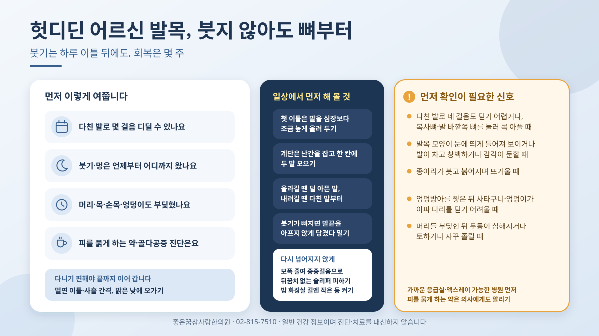

이종호 한의사 감수좋은꿈참사랑한의원 대표원장 (한의사 면허번호 19769)발행 2026-11-26 · 수정 2026-11-26
이 글의 차례
장바구니를 들고 계단을 내려오다 마지막 한 칸을 놓쳤습니다. 발목이 툭 꺾였다가 겨우 난간을 붙잡았고, 그때는 걸을 만해서 그냥 하루를 보내셨을지도 모릅니다.
일흔, 여든이 넘은 분이 계단에서 발목을 헛디뎠다면 붓지 않았다고 안심하기는 이릅니다. 뼈에 금이 가지 않았는지 먼저 확인하고, 붓기가 늦게 올라올 수 있다는 것과 회복에 몇 주가 걸릴 수 있다는 것을 알고 계획을 세우시면 좋겠습니다.
진료실에서 발을 보여 달라고 하면 괜찮다며 손사래를 치시는 분이 많습니다. 자식들 걱정시킬까 봐, 병원 다니기 번거로울까 봐 그러시는 마음을 압니다. 그래도 발목만큼은 한 번 꼼꼼히 봐야 합니다.
왜 붓지 않았는데도 뼈부터 확인할까요
나이가 들면 뼈가 약해지기 쉬워서, 젊을 때라면 삐끗하고 말았을 일에도 뼈에 금이 갈 수 있습니다. 그래서 저는 어르신 발목을 보면 붓기보다 골절 가능성을 먼저 떠올립니다.
디딜 때 많이 아파하시면 이렇게 말씀드립니다. "퉁퉁 붓거나 안 좋으면 엑스레이도 찍어보셔야 될 것 같은데." 지금은 붓지 않았다고 하셔도, 붓기는 하루 이틀 사이에 더 올라오기도 합니다.
뼈 검사가 필요한지 가늠할 때 눈여겨보는 단서가 있습니다. 안쪽이나 바깥쪽 복사뼈의 뒤쪽 가장자리와 끝을 눌러 아픈지, 발 바깥쪽 가운데 툭 튀어나온 뼈나 발등 안쪽 뼈를 눌러 아픈지 봅니다.
다친 직후에도, 지금도 다친 발로 네 걸음을 제대로 딛기 어렵다면 그것도 단서입니다. 하나라도 해당되면 엑스레이를 찍을 수 있는 병원에서 먼저 확인하세요.
어르신은 이런 신호가 뚜렷하지 않더라도 발목이 크게 꺾였다면 한 번 확인해 두시길 권합니다. 뼈가 괜찮다는 것을 알고 시작하면 치료하는 쪽도, 받으시는 쪽도 마음이 훨씬 편합니다.
왜 붓기는 늦게 올라오고 회복은 오래 걸릴까요
발을 헛디디는 그 짧은 순간, 발목은 평소 움직이는 범위를 넘어 꺾였다가 제자리로 돌아옵니다. 저는 이것을 겉으로 한 번 헛디디는 사이에 몸 안에서도 한 번 헛디딘 것이라고 설명드립니다.
그 사이 발목을 붙잡고 있던 인대와 둘레 조직이 늘어나거나 상처를 입습니다. 그래서 한 곳만 붓지 않고 발목 둘레가 돌아가며 붓기도 하고, 멍은 며칠 뒤 발등이나 발꿈치 쪽으로 내려와 보이기도 합니다.
다친 날 저녁에 괜찮았다고 다음 날도 괜찮으리라는 법은 없습니다. 붓기는 다친 뒤 하루 이틀 동안 더 올라오는 경우가 많아서, 첫 이틀은 발을 아끼시는 편이 좋습니다.
회복에 걸리는 시간도 생각보다 깁니다. 저는 처음부터 "오래 걸려요." 하고 미리 말씀드립니다. 가볍게 삔 발목도 몇 주는 지켜보는 경우가 흔하고, 나이가 들수록 다친 조직이 아무는 속도는 더뎌지기 쉽습니다.
나이가 들면 발목을 둘러싼 근육의 힘도 줄어 있어, 다친 인대를 둘레에서 받쳐 주는 힘이 약합니다. 그래서 같은 정도로 삐어도 젊을 때보다 회복이 길게 느껴지기 쉽습니다.
오래 걸린다는 것을 알고 시작하면 중간에 낙담하는 일이 줄어듭니다. 열흘쯤 지나 아직 시큰하다고 해서 잘못되고 있는 것은 아닐 수 있습니다. 어제보다 디디기가 조금이라도 편해졌는지를 보시면 됩니다.
발목이 아프면 종아리도 함께 굳습니다. 아픈 발을 덜 쓰려고 디딜 때마다 종아리에 힘이 들어가기 때문입니다. 그래서 발목만이 아니라 종아리와 발바닥, 반대쪽 다리까지 함께 봅니다.
넘어지면서 다른 곳도 부딪히지 않으셨나요
넘어질 때 발목만 다치는 것은 아닙니다. 문턱이나 벽, 바닥에 머리를 부딪히고 그 충격이 목까지 가는 경우도 있습니다. 발목이 워낙 아파서 목과 허리, 손목이 아픈 것을 며칠 뒤에야 알아차리시기도 합니다.
부딪힌 목의 통증은 발목과 따로, 더 오래 살펴야 할 때가 있습니다. 그래서 저는 발목을 보면서도 머리와 목, 손목, 엉덩이를 함께 여쭙니다. 한쪽을 치료하느라 다른 쪽을 놓치지 않기 위해서입니다.
엉덩방아를 찧으셨다면 고관절도 살펴야 합니다. 일어서거나 다리를 디딜 때 사타구니나 엉덩이 쪽이 아프면 발목보다 그쪽을 먼저 확인해야 합니다.
혼자 지내신다면 다친 사실을 가족이나 가까운 분께 알려 두세요. 붓기가 심해지거나 다시 넘어졌을 때 바로 도움을 받을 수 있습니다. 걱정 끼칠까 봐 감추시는 것보다 그편이 모두에게 덜 놀랍습니다.
다니기 편해야 끝까지 이어 갑니다
발목 치료는 한두 번으로 끝나기보다 정해진 기간 동안 이어 가는 경우가 많습니다. 그래서 한두 번 받고 그만두시기보다, 다친 정도에 따라 일주일이나 이주일 단위로 이어서 오시도록 계획을 함께 세웁니다.
가까이 사시는 분은 짧게 자주 오시는 편이 맞을 수 있습니다. 멀리서 오시는 분은 오가는 길 자체가 발목에 부담이 되니, 오시는 간격을 이틀이나 사흘로 두고 한 번 오셨을 때 살필 것을 조금 더 챙기는 쪽을 함께 고민합니다.
어르신께는 오고 가는 길이 불편하지 않아야 합니다. 그래서 집이 멀다면 집 가까운 한의원에서 이어 받으셔도 괜찮다고 말씀드립니다. 어디서 받느냐보다 끊기지 않고 이어 가는 쪽이 먼저입니다.
오시는 시간대도 함께 봅니다. 계단이 젖는 비 오는 날이나 길이 어두워진 저녁보다는, 밝은 낮이 오가기 한결 편합니다.
치료를 받고 나서 이틀씩 더 아프다면 꼭 말씀해 주세요. 참고 다니시다가 아예 발길을 끊으시는 분이 있는데, 그러실 필요가 없습니다. 반응이 큰 부위는 방법을 바꾸거나 그 부위를 쉬어 가면 됩니다.
다친 발목을 다시 움직일 때의 원칙
붓기가 가라앉고 나면 이제 움직여도 되나 고민되실 겁니다. 이때 제가 드리는 원칙은 하나입니다. 남이 억지로 꺾어 늘리기보다, 아프지 않은 범위에서 내가 스스로 움직이는 것부터입니다.
다친 인대와 힘줄은 아직 약합니다. 누가 세게 당겨 늘리면 겨우 아물어 가던 자리에 다시 무리가 갈 수 있습니다. 내 힘으로 움직이면 몸이 알아서 아픈 지점 앞에서 멈춥니다.
되는 범위 안에서 조금씩 자주 움직이면 그 범위가 서서히 넓어질 수 있습니다. 운동하다 손목을 다친 분께도, 발목을 접질린 어르신께도 저는 같은 원칙을 말씀드립니다. 오늘 한 번에 끝까지 돌리려 하지 마세요.
재활은 자칫하면 처음으로 돌아가기 쉽습니다. 조금 나았다고 욕심을 내 오래 걷거나 계단을 많이 오르내리면 다시 붓고 아파서 며칠을 쉬어야 할 때가 있습니다. 의욕이 앞설 때일수록 한 걸음 덜 가 보세요. 그래야 오래갑니다.
그렇다고 붓기가 다 빠질 때까지 집에만 계시라는 말은 아닙니다. 오래 누워 지내면 다리 힘이 먼저 빠지고, 바깥에 나서기가 점점 더 어려워집니다. 아프지 않은 만큼, 집 앞까지라도 천천히 다녀오세요.
먼저 이렇게 여쭙니다
첫 진료에서는 발목을 보기 전에 다친 순간부터 차근차근 여쭙니다.
- 언제, 어떤 계단에서, 오르다가인지 내려가다가인지
- 다친 직후와 지금, 다친 발로 몇 걸음을 디딜 수 있는지
- 붓기와 멍이 언제부터, 어디까지 올라왔는지
- 넘어지면서 머리나 목, 손목, 엉덩이를 부딪히지 않았는지
- 드시는 약, 특히 피를 묽게 하는 약이 있는지와 골다공증 진단을 받은 적이 있는지
- 한의원까지 오가는 데 걸리는 시간과, 오는 길에 계단이나 언덕이 있는지
- 다 나으면 다시 하고 싶은 일(장보기, 산책, 복지관 나들이 같은 것)
오가는 길을 묻는 질문을 의아해하시는 분도 계십니다. 앞에서 말씀드렸듯 어르신 발목 치료에서는 오가는 길도 계획의 큰 몫입니다. 다시 하고 싶은 일을 여쭙는 것은, 목표가 있으면 오늘 몇 걸음을 걸을지 정하기가 쉬워지기 때문입니다.
스스로 점검해 보세요
다친 지 며칠이 지났다면 아래를 한번 짚어 보세요.
- 다친 뒤 하루 이틀 사이에 붓기나 멍이 더 넓어졌다
- 복사뼈 둘레나 발 바깥쪽 뼈를 누르면 콕 집어 아프다
- 계단을 내려갈 때 발목이 다시 꺾일 것 같아 불안하다
- 다친 쪽 종아리가 반대쪽보다 단단하게 뭉쳐 있다
- 아픈 발을 아끼느라 반대쪽 무릎이나 허리가 뻐근하다
- 아침 첫걸음이 유난히 시큰하다
- 넘어지며 부딪힌 목이나 손목도 며칠째 불편하다
두세 가지가 겹친다면 발목만 보고 넘기지 말고 한 번 진료를 받아 보세요. 뼈를 눌렀을 때 아픈 항목이 있다면 그보다 먼저 엑스레이로 확인하시고요.
이런 경우가 많습니다
예를 들어 다친 날은 걸을 만했는데, 다음 날 아침 발목이 부어 신발이 잘 들어가지 않는 경우가 있습니다. 이때는 붓기가 늦게 올라온 것인지, 뼈 쪽 문제인지부터 가립니다.
예를 들어 발목이 나아 가던 중에 오랜만에 장을 보러 오래 걸었더니, 그날 저녁 다시 부어오른 경우도 있습니다. 이럴 때는 걷는 양을 잠시 되돌리고, 다음 날 아침 발목이 어떤지 보고 다시 늘립니다.
예를 들어 발목 때문에 오셨는데 넘어질 때 짚은 손목이나 부딪힌 목이 더 오래 불편한 경우도 있습니다. 이때는 발목과 목을 나누어 각각 살핍니다.
일상에서 먼저 해 볼 수 있는 것
- 다친 뒤 첫 이틀은 앉거나 누울 때 발을 심장보다 조금 높게 올려 두기
- 붓고 열감이 있는 곳에는 얇은 수건으로 감싼 얼음을 15~20분씩 대기(감각이 둔하거나 당뇨가 있으면 피부를 자주 살피기)
- 붓기가 있는 동안 오래 서 있거나 오래 걷는 일 줄이기
- 계단은 난간을 잡고 한 칸에 두 발을 모으며 다니되, 올라갈 때는 덜 아픈 발부터, 내려갈 때는 다친 발부터 내딛기
- 보폭을 줄여 앞발 근처까지만 내딛는 종종걸음으로 걷기
- 뒤꿈치가 없는 슬리퍼나 밑창이 닳아 미끄러운 신발은 당분간 신지 않기
- 붓기가 가라앉으면 앉아서 발끝을 아프지 않은 범위에서 천천히 당겼다 밀기
보폭 이야기는 어르신들께 자주 드립니다. 마음은 젊을 때 걸음 그대로인데 발목은 지금의 발목입니다. 성큼성큼 걷던 습관을 잠시 내려놓으면 다친 발목에도, 다시 넘어지지 않는 데에도 도움이 될 수 있습니다.
다친 뒤 며칠은 밤에 화장실 가는 길이 가장 조심스럽습니다. 가는 길에 작은 등을 켜 두고, 잠에서 깨면 바로 일어서지 말고 침대 가장자리에 잠시 앉았다가 일어나세요.
발목 보호대나 붕대는 붓기가 있는 동안 발목을 받쳐 주는 데 도움이 될 수 있습니다. 다만 너무 조이면 발이 저리고 차가워질 수 있으니 발가락 색과 감각을 자주 보시고, 언제까지 할지는 진료 때 함께 정하세요.
계단에서 난간을 놓기가 겁나신다면 60대에 계단에서 난간을 꼭 잡게 되었다면 몸에서 무엇을 살펴봐야 하나요?를, 집 안에서 손볼 곳은 70대 어르신 집의 욕실과 현관은 낙상을 줄이려면 어떻게 점검하나요?를 참고해 보세요.
한의원에서 함께 살필 수 있는 경우
- 뼈에는 이상이 없다고 들었는데 붓기와 통증이 이어지는 경우
- 다친 발목을 감싸느라 종아리와 무릎, 허리까지 뻐근해진 경우
- 넘어진 뒤 목이나 어깨, 손목 같은 다른 곳도 함께 불편한 경우
- 다시 접질릴까 봐 걷기가 겁나는 경우
좋은꿈참사랑한의원에서는 처음 오신 모든 분께 맥을 짚습니다. 그다음 발목의 붓기와 멍, 누르면 아픈 자리, 걷는 모습을 직접 봅니다.
필요하다고 판단되면 초음파로 인대와 힘줄 주변을 살피고, 뼈 확인이 필요하면 엑스레이가 가능한 병원을 먼저 안내합니다. 치료는 침과 물리치료를 바탕으로 그날의 붓기와 통증에 맞추어 정합니다.
예전에 발목을 자주 삐셨던 분이라면 걷는 습관이 이미 달라져 있을 수 있습니다. 예전에 발목을 자주 삐었는데 요즘 무릎과 허리가 불편하면 연관이 있나요?도 함께 읽어 보세요.
이렇게 기록해 오시면 상담이 쉬워집니다
- 다친 날짜와 시간, 어떻게 헛디뎠는지
- 붓기와 멍을 하루 한 번 같은 시간, 같은 각도로 찍은 사진
- 하루에 걸은 시간과 그날 저녁 붓기의 변화
- 드시는 약 봉투나 처방전 사진, 다른 병원에서 들은 설명
사진은 거창하지 않아도 됩니다. 휴대전화로 매일 저녁 같은 자리에서 한 장씩이면 충분합니다. 붓기가 어디서 어디로 옮겨 가는지 보이면 다음 계획을 세우기가 한결 쉬워집니다.
이런 증상은 먼저 확인이 필요합니다
- 다친 발로 네 걸음도 디디기 어려운 경우
- 복사뼈나 발 바깥쪽 뼈를 눌렀을 때 콕 찌르듯 아픈 경우
이런 신호가 있으면 한의원보다 가까운 병원이나 응급실을 먼저 찾으세요.
다친 발목은 시간이 걸립니다. 그래도 오늘 디딜 수 있는 만큼 디디고, 아픈 날은 아프다고 말씀해 주시면 됩니다. 다음에 오시면 지난번보다 몇 걸음을 더 편하게 디디셨는지부터 여쭙겠습니다.

여쭙는 것
- 언제, 어떤 계단에서, 오르다가인지 내려가다가인지
- 다친 직후와 지금, 다친 발로 몇 걸음을 디딜 수 있는지
- 붓기와 멍이 언제부터, 어디까지 올라왔는지
생활에서 해 볼 것
- 다친 뒤 첫 이틀은 앉거나 누울 때 발을 심장보다 조금 높게 올려 두기
- 붓고 열감이 있는 곳에는 얇은 수건으로 감싼 얼음을 15~20분씩 대기(감각이 둔하…
- 붓기가 있는 동안 오래 서 있거나 오래 걷는 일 줄이기
한의원에서 함께 살필 것
- 뼈에는 이상이 없다고 들었는데 붓기와 통증이 이어지는 경우
- 다친 발목을 감싸느라 종아리와 무릎, 허리까지 뻐근해진 경우
- 넘어진 뒤 목이나 어깨, 손목 같은 다른 곳도 함께 불편한 경우
먼저 확인이 필요한 신호
- 다친 발로 네 걸음도 디디기 어려운 경우
- 복사뼈나 발 바깥쪽 뼈를 눌렀을 때 콕 찌르듯 아픈 경우
한눈에 보는 표
| 구분 | 핵심 |
|---|---|
| 여쭙는 것 | 언제, 어떤 계단에서, 오르다가인지 내려가다가인지 다친 직후와 지금, 다친 발로 몇 걸음을 디딜 수 있는지 |
| 생활에서 해 볼 것 | 다친 뒤 첫 이틀은 앉거나 누울 때 발을 심장보다 조금 높게 올려 두기 붓고 열감이 있는 곳에는 얇은 수건으로 감싼 얼음을 15~20분씩 대기(감각이 둔하거나 당뇨가 있으면 피부를 자주 살피기) |
| 한의원에서 함께 살필 것 | 뼈에는 이상이 없다고 들었는데 붓기와 통증이 이어지는 경우 다친 발목을 감싸느라 종아리와 무릎, 허리까지 뻐근해진 경우 |
| 먼저 확인이 필요한 신호 | 다친 발로 네 걸음도 디디기 어려운 경우 복사뼈나 발 바깥쪽 뼈를 눌렀을 때 콕 찌르듯 아픈 경우 |
자주 묻는 질문
바로 붓지 않았는데도 엑스레이를 찍어야 하나요?
디딜 때 많이 아프거나 복사뼈, 발 바깥쪽 뼈를 눌렀을 때 아프면 확인을 권합니다. 어르신은 뼈가 약해지기 쉬워 붓기가 적어도 금이 가는 경우가 있고, 붓기는 하루 이틀 뒤 더 올라오기도 합니다.
얼마나 다녀야 하나요?
다친 정도와 나이, 평소 걷는 양에 따라 다릅니다. 가벼운 염좌도 몇 주는 지켜보는 경우가 많아, 첫 진료에서 대략의 기간과 오시는 간격을 오가는 길까지 생각해 함께 정합니다.
집이 멀면 어떻게 하나요?
오가는 길이 발목에 부담이 되지 않는 것이 먼저입니다. 오시는 간격을 조정하거나, 집 가까운 의료기관에서 이어 받으시는 방법도 함께 상의합니다.
아프지 않으면 계단을 다시 다녀도 되나요?
처음에는 난간을 잡고 한 칸씩 천천히 다니세요. 다녀온 날 저녁이나 다음 날 다시 붓거나 아프면 양을 줄이고, 몸의 반응을 보며 조금씩 늘립니다.
좋은꿈참사랑한의원은 재진 때 지난번 이야기부터 이어서 여쭙니다. 진료시간과 예약은 오시는 길에서 확인하세요.
어디서 상담받을 수 있나요?
좋은꿈참사랑한의원은 서울 동작구 만양로2길 2 신성빌딩 3층·5층(서울 동작구 상도동, 7호선 상도역 3번 출구 근처)에 있습니다. 한의사 3명(이종호 대표원장, 조영기 수석진료원장, 정원영 진료원장)이 진료합니다. 진료시간은 평일 09:30~20:00(점심 13:00~14:00), 토·일·공휴일 09:30~15:00이며, 방문 전 전화로 확인을 권합니다. 예약은 네이버 예약, 카카오톡 상담, 전화 02-815-7510로 받습니다.
이 글은 일반적인 건강 정보이며 개인의 진단이나 치료를 대신하지 않습니다. 증상이 있거나 복용 중인 약이 있다면 진료를 통해 확인하세요. 치료 효과는 개인마다 다를 수 있습니다.
작성 기준: 일반적으로 알려져 있는 건강 정보를 참고해 정리했습니다(대표원장 감수). 증상 기록은 1~2주 동안 하루 1회, 비슷한 시간에 적어 오시면 지난 상태와 비교하기 쉽습니다.